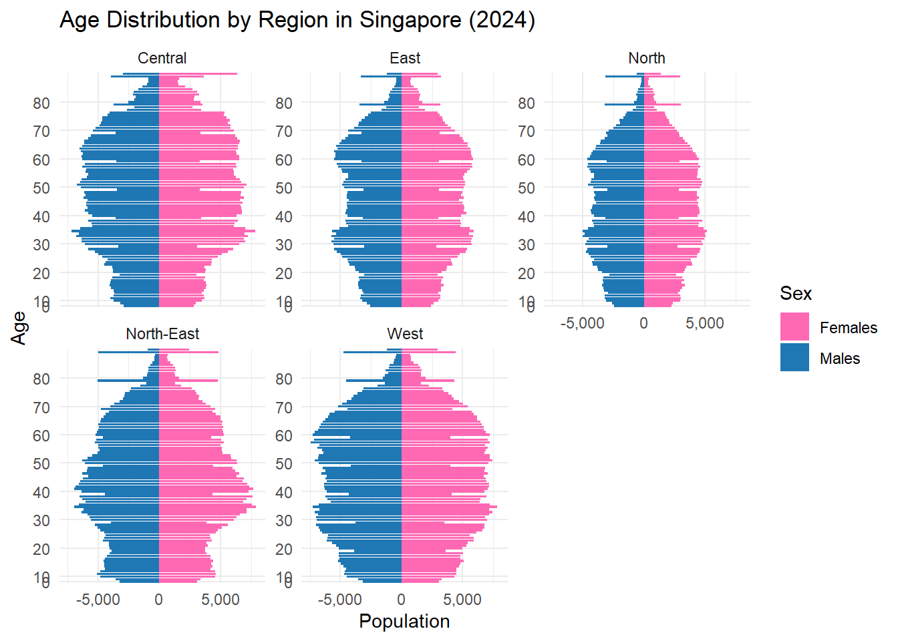

pacman::p_load(ggrepel, patchwork,
ggthemes, hrbrthemes,
tidyverse, ggplot2) Take-home Exercise 1B
1. Introduction
1.1. Setting the scene
A local online media company that publishes daily content on digital platforms is planning to release an article on demographic structures and distribution of Singapore in 2024.
1.2. The task
In this take-home exercise, we are assuming the role of the graphical editor of the media company,and are tasked to prepare at most three data visualisation for the article.
2. Getting Started
2.1. Importing packages and libraries
2.2. Importing data
The dataset shared by Department of Statistics, Singapore (DOS), Singapore Residents by Planning Area / Subzone, Single Year of Age and Sex, June 2024, is used
pop_data <- read_csv("data/respopagesex2024.csv")Rows: 60424 Columns: 6
── Column specification ────────────────────────────────────────────────────────
Delimiter: ","
chr (4): PA, SZ, Age, Sex
dbl (2): Pop, Time
ℹ Use `spec()` to retrieve the full column specification for this data.
ℹ Specify the column types or set `show_col_types = FALSE` to quiet this message.glimpse(pop_data)Rows: 60,424
Columns: 6
$ PA <chr> "Ang Mo Kio", "Ang Mo Kio", "Ang Mo Kio", "Ang Mo Kio", "Ang Mo K…
$ SZ <chr> "Ang Mo Kio Town Centre", "Ang Mo Kio Town Centre", "Ang Mo Kio T…
$ Age <chr> "0", "0", "1", "1", "2", "2", "3", "3", "4", "4", "5", "5", "6", …
$ Sex <chr> "Males", "Females", "Males", "Females", "Males", "Females", "Male…
$ Pop <dbl> 10, 10, 10, 10, 10, 10, 10, 10, 30, 10, 20, 10, 20, 30, 30, 10, 3…
$ Time <dbl> 2024, 2024, 2024, 2024, 2024, 2024, 2024, 2024, 2024, 2024, 2024,…2.3. Exploring data
summary(pop_data) PA SZ Age Sex
Length:60424 Length:60424 Length:60424 Length:60424
Class :character Class :character Class :character Class :character
Mode :character Mode :character Mode :character Mode :character
Pop Time
Min. : 0.0 Min. :2024
1st Qu.: 0.0 1st Qu.:2024
Median : 20.0 Median :2024
Mean : 69.4 Mean :2024
3rd Qu.: 90.0 3rd Qu.:2024
Max. :1180.0 Max. :2024 unique(pop_data$PA) [1] "Ang Mo Kio" "Bedok"
[3] "Bishan" "Boon Lay"
[5] "Bukit Batok" "Bukit Merah"
[7] "Bukit Panjang" "Bukit Timah"
[9] "Central Water Catchment" "Changi"
[11] "Changi Bay" "Choa Chu Kang"
[13] "Clementi" "Downtown Core"
[15] "Geylang" "Hougang"
[17] "Jurong East" "Jurong West"
[19] "Kallang" "Lim Chu Kang"
[21] "Mandai" "Marina East"
[23] "Marina South" "Marine Parade"
[25] "Museum" "Newton"
[27] "North-Eastern Islands" "Novena"
[29] "Orchard" "Outram"
[31] "Pasir Ris" "Paya Lebar"
[33] "Pioneer" "Punggol"
[35] "Queenstown" "River Valley"
[37] "Rochor" "Seletar"
[39] "Sembawang" "Sengkang"
[41] "Serangoon" "Simpang"
[43] "Singapore River" "Southern Islands"
[45] "Straits View" "Sungei Kadut"
[47] "Tampines" "Tanglin"
[49] "Tengah" "Toa Payoh"
[51] "Tuas" "Western Islands"
[53] "Western Water Catchment" "Woodlands"
[55] "Yishun" unique(pop_data$Sex)[1] "Males" "Females"range(pop_data$Age)[1] "0" "90_and_Over"3. Data Visualisation
“Singapore’s population is not just aging—it is unevenly distributed across regions by age structure and gender, creating a multi-dimensional urban planning challenge. Certain districts are aging faster, while others remain youth-centric. Meanwhile, gender imbalances appear in elderly cohorts, hinting at future care demand disparities.”
3.1. Faceted age pyramid by region type
#Step 1: Map each Planning Area to a Region
# Manually define Planning Area to Region map
region_map <- tibble::tibble(
PA = c("Tampines", "Pasir Ris", "Bedok", "Hougang", "Sengkang", "Punggol", "Serangoon",
"Toa Payoh", "Bishan", "Ang Mo Kio", "Bukit Merah", "Queenstown", "Clementi",
"Jurong East", "Jurong West", "Choa Chu Kang", "Woodlands", "Yishun", "Bukit Batok",
"Bukit Panjang", "Sembawang", "Geylang", "Kallang", "Rochor", "Outram"),
Region = c("East", "East", "East", "North-East", "North-East", "North-East", "North-East",
"Central", "Central", "Central", "Central", "Central", "West",
"West", "West", "West", "North", "North", "West",
"West", "North", "Central", "Central", "Central", "Central")
)#Step 2: Prepare faceted pyramid data
pyramid_data <- pop_data %>%
left_join(region_map, by = "PA") %>%
filter(!is.na(Region)) %>%
group_by(Region, Age, Sex) %>%
summarise(Pop = sum(Pop), .groups = "drop") %>%
mutate(Pop = ifelse(Sex == "Males", -Pop, Pop))
#Step 3: Plotting
ggplot(pyramid_data, aes(x = Age, y = Pop, fill = Sex)) +
geom_bar(stat = "identity") +
coord_flip() +
facet_wrap(~ Region, scales = "free_y") +
scale_y_continuous(labels = scales::comma) +
scale_x_discrete(breaks = seq(0, 100, by = 10)) +
scale_fill_manual(values = c("Males" = "#1F77B4", "Females" = "#FF69B4")) +
labs(title = "Age Distribution by Region in Singapore (2024)",
x = "Age", y = "Population") +
theme_minimal()